ntut_eastdorm_Ethernet_Guide — 三種系統完整設定教學，讓你快速連上宿網
在你連上優質又穩定的宿網之前，你必須確認你準備的電腦是否有 RJ45 網孔（如下圖 1）以及網路線（如下圖 2，若是桌上型電腦 PC，建議網路線長度超過 3m）。若電腦沒有 RJ45 網孔，請先購買 USB-C / Type-C 轉 RJ45 網路轉接頭；若沒有網路線，請先購買網路線（建議購買 Cat5e 或 Cat6 等規格的網路線以支援 Giga 級網速）。
| 圖 1 | 圖 2 |
|---|
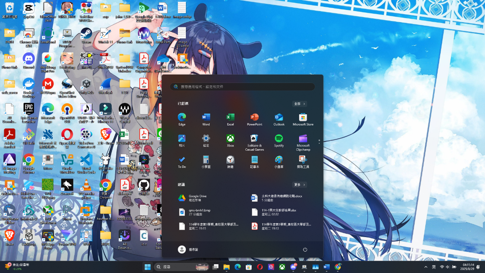
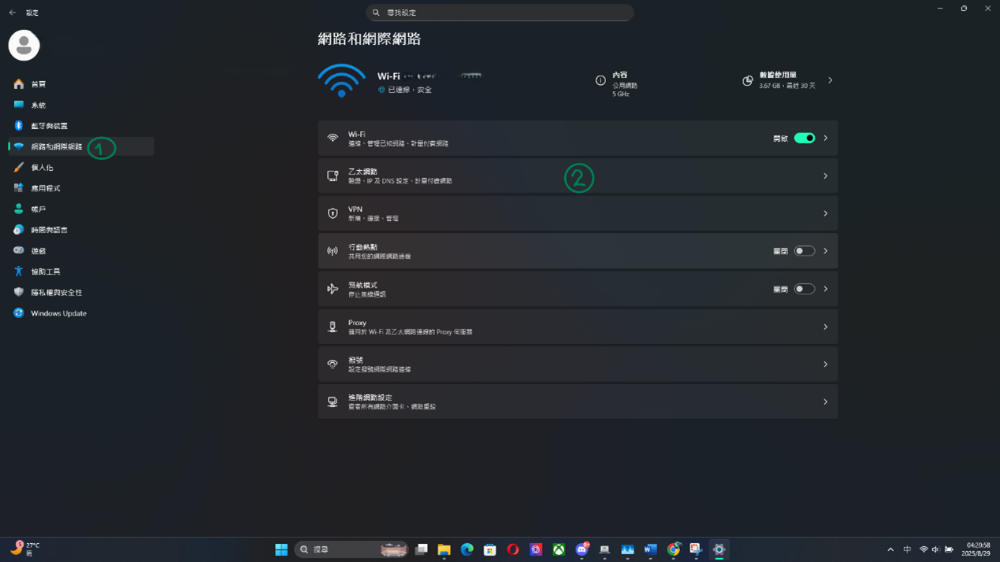
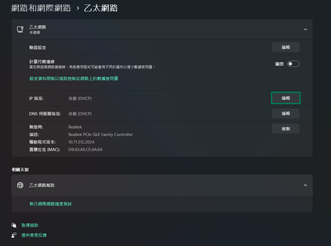
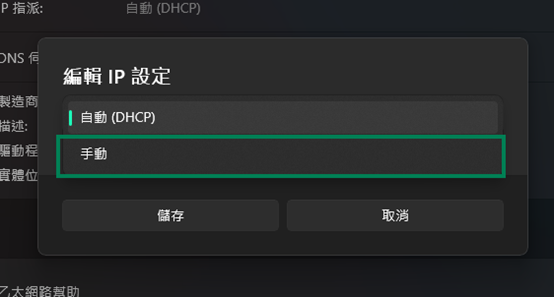
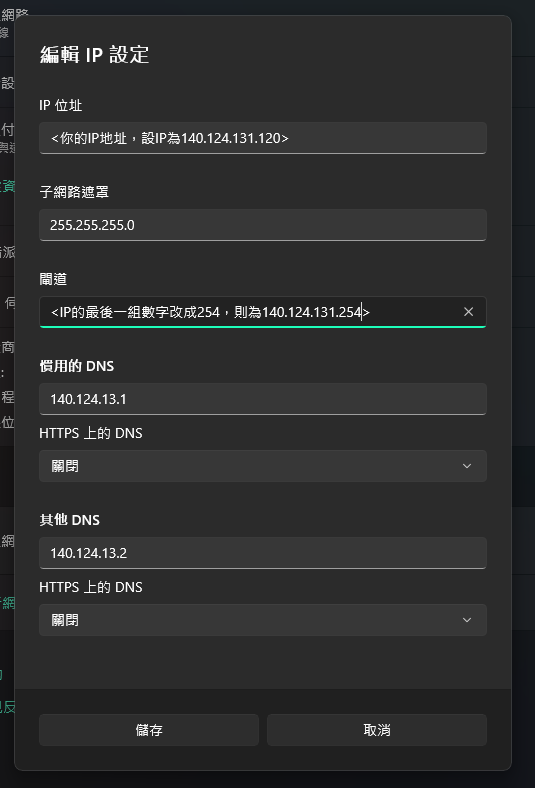
netsh interface ip set address name="乙太網路" static {你的IP位址} 255.255.255.0 {你的IP位址的末碼改成254}
netsh interface ip set dns name="乙太網路" static 140.124.13.1
netsh interface ip add dns name="乙太網路" 140.124.13.2 index=2假設IP位址為 140.124.131.120 則我需要這樣打
netsh interface ip set address name="乙太網路" static 140.124.131.120 255.255.255.0 140.124.131.254
netsh interface ip set dns name="乙太網路" static 140.124.13.1
netsh interface ip add dns name="乙太網路" 140.124.13.2 index=2@echo off
:: 確保指令路徑正確，避免環境變數問題
SET CMD_NETSH=C:\Windows\System32\netsh.exe
echo [1/3] 正在設定靜態 IP ...
%CMD_NETSH% interface ip set address name="乙太網路" static {你的IP位址} 255.255.255.0 {你的IP位址的末碼改成254}
echo [2/3] 正在設定主要 DNS ...
%CMD_NETSH% interface ip set dns name="乙太網路" static 140.124.13.1
echo [3/3] 正在設定次要 DNS ...
%CMD_NETSH% interface ip add dns name="乙太網路" 140.124.13.2 index=2
echo.
echo 設定完成！檢查結果：
%CMD_NETSH% interface ip show config name="乙太網路"
pause假設IP位址為 140.124.131.120 則我需要這樣打
@echo off
:: 確保指令路徑正確，避免環境變數問題
SET CMD_NETSH=C:\Windows\System32\netsh.exe
echo [1/3] 正在設定靜態 IP ...
%CMD_NETSH% interface ip set address name="乙太網路" static 140.124.131.120 255.255.255.0 140.124.131.254
echo [2/3] 正在設定主要 DNS ...
%CMD_NETSH% interface ip set dns name="乙太網路" static 140.124.13.1
echo [3/3] 正在設定次要 DNS ...
%CMD_NETSH% interface ip add dns name="乙太網路" 140.124.13.2 index=2
echo.
echo 設定完成！檢查結果：
%CMD_NETSH% interface ip show config name="乙太網路"
pause只有這個使用 UTF-8 也沒問題
@echo off
chcp 65001
:: 確保指令路徑正確，避免環境變數問題
SET CMD_NETSH=C:\Windows\System32\netsh.exe
echo [1/2] 正在設定動態 IP ...
netsh interface ip set address name="乙太網路" source=dhcp
echo [2/2] 正在設定動態取得 DNS ...
netsh interface ip set dns name="乙太網路" source=dhcp
echo 已恢復為自動取得 IP。
echo.
echo 設定完成！檢查結果：
%CMD_NETSH% interface ip show config name="乙太網路"
pause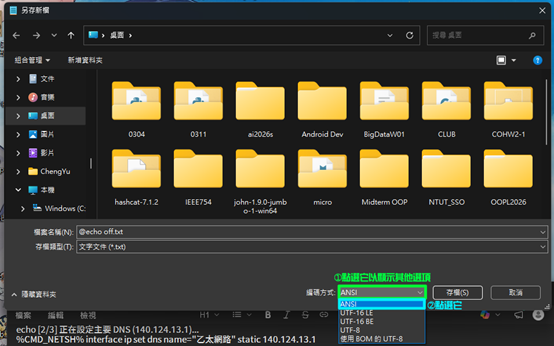
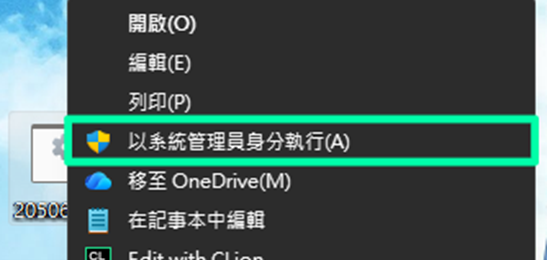
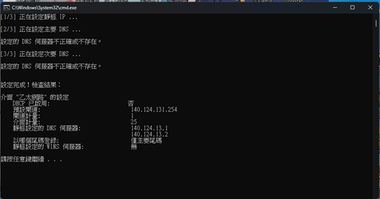
多數現代 Linux 發行版（如 Ubuntu, Debian, Fedora, Arch）皆預設使用 NetworkManager，因此推薦使用 nmcli 命令列工具。
nmcli connection show有線連線 1，英文系統為 Wired connection 1，以下以 "有線連線 1" 為例）。
# 設定 IP 位址與子網路遮罩 (請將 {你的IP位址} 替換成實際分配的 IP)
sudo nmcli connection modify "有線連線 1" ipv4.addresses {你的IP位址}/24
# 設定預設閘道 (Gateway) (例如將 IP 位址的最後一碼改成 254)
sudo nmcli connection modify "有線連線 1" ipv4.gateway {你的IP位址的末碼改成254}
# 設定主要與次要 DNS 伺服器
sudo nmcli connection modify "有線連線 1" ipv4.dns "140.124.13.1 140.124.13.2"
# 設定為手動 (靜態) 模式
sudo nmcli connection modify "有線連線 1" ipv4.method manual例如IP位址為 140.124.131.120 則我需要這樣打
sudo nmcli connection modify "有線連線 1" ipv4.addresses 140.124.131.120/24
sudo nmcli connection modify "有線連線 1" ipv4.gateway 140.124.131.254
sudo nmcli connection modify "有線連線 1" ipv4.dns "140.124.13.1 140.124.13.2"
sudo nmcli connection modify "有線連線 1" ipv4.method manualsudo nmcli connection down "有線連線 1"
sudo nmcli connection up "有線連線 1"sudo nmcli connection modify "有線連線 1" ipv4.method auto
sudo nmcli connection up "有線連線 1"macOS 系統可以使用內建的 networksetup 指令進行設定。
networksetup -listallnetworkservicesEthernet 或 AX88179A 等外接轉接卡名稱，以下以 "Ethernet" 為例）。
sudo networksetup -setmanual "Ethernet" {你的IP位址} 255.255.255.0 {你的IP位址的末碼改成254}sudo networksetup -setdnsservers "Ethernet" 140.124.13.1 140.124.13.2sudo networksetup -setdhcp "Ethernet"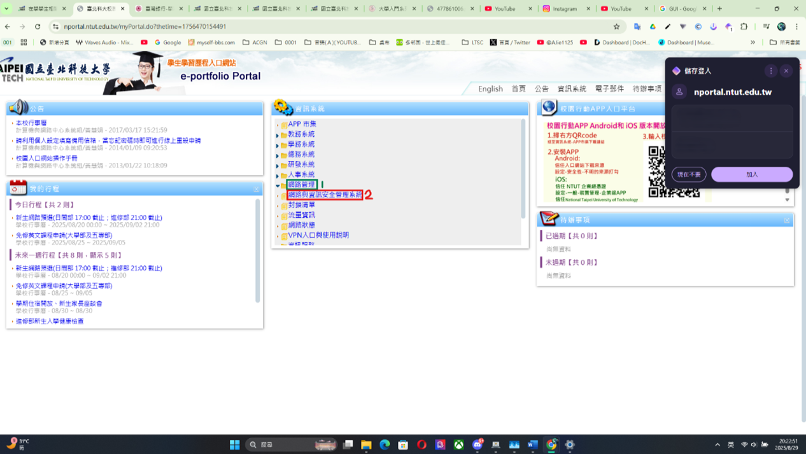
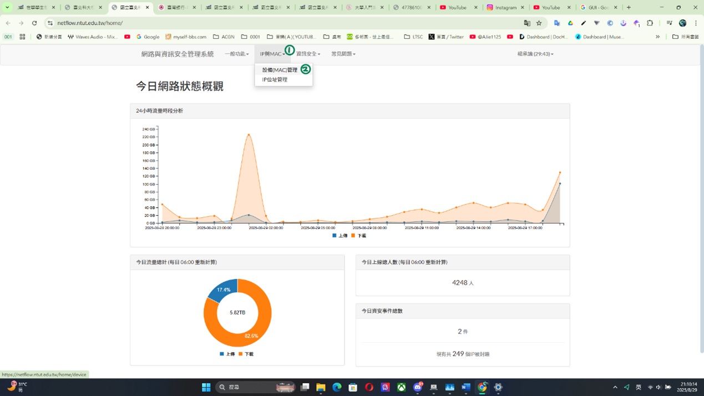
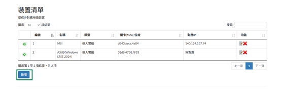
Windows 系統：
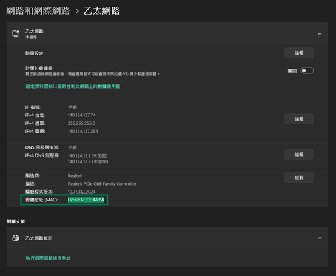
getmac /v /fo list 指令，找到有線網路卡（例如「乙太網路」或「Ethernet」）對應的「實體位址」即可。
getmac /v /fo list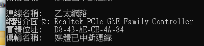
Linux 系統：
ip link show 指令，找到有線網卡（通常以 en 或 eth 開頭）下方的 link/ether，後面的 12 碼十六進位字元即為 MAC 位址。
ip link showmacOS 系統：
Ethernet 或對應外接轉接卡的 Ethernet Address）：
networksetup -listallhardwareports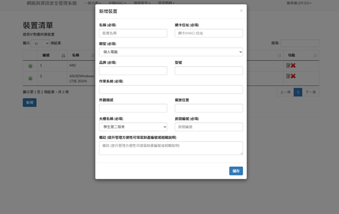
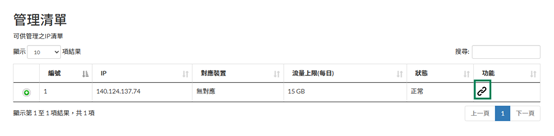
| 電力首頁 | 客服中心 | 啟用電力 | |
|---|---|---|---|
| 簡報 |